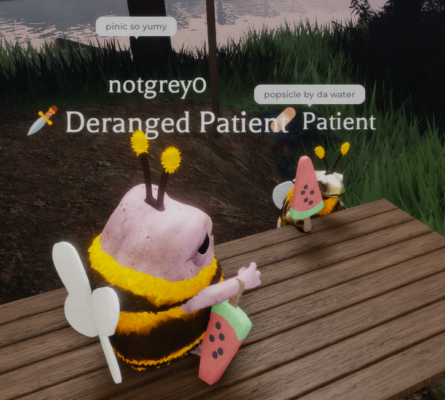
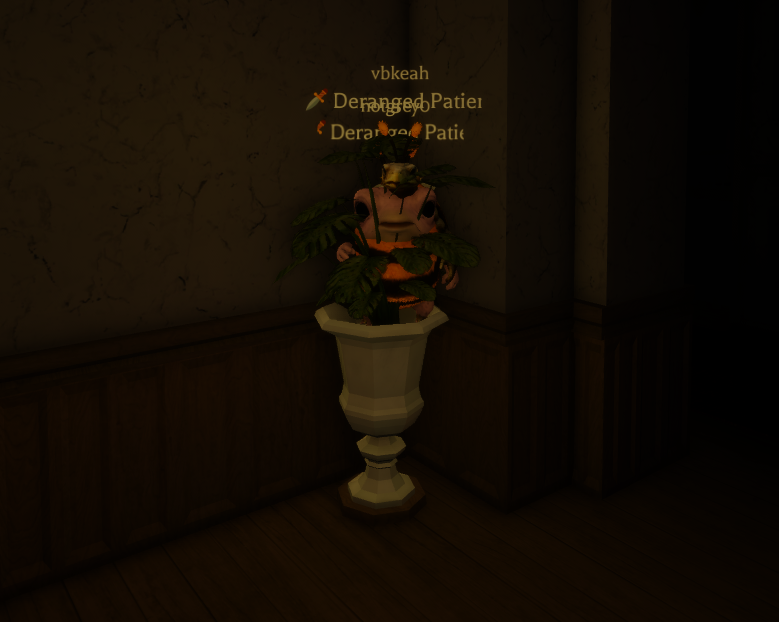

As mentioned before, there are a lot of different events that can happen at Equalia Falls.
For just a few hours, every week or so – the nurses host the Picnic event, where patients can rest under the sun without the fear of
something lurking behind them,
for a chance at peace to think everything is fine.
However it was especially important to the two little beings.
As Ashton raised the two little beings, he had to teach them simple rules of life. Including what was edible, and what was not.
Rae was pretty good with knowing what was or wasn’t edible – he enjoyed eating things that tasted good, not things that just looked good.
Grey was unique in that sense. Grey enjoyed looking at pretty things – crystals, brownies and cakes, fish – or tables with cloth set up nicely on them.
On their first Pinic ever together, Grey and Rae had been served some brownies on a plate, overseen by Ashton himself and some other patients
and nurses also
participating in the event.
While Rae moved onto the seat closest to Ashton – afraid of the water nearby – Grey had already begun removing a corner of the decorated table
after eating the served brownies. Rae was impressed and went to do the same, but ended up spitting the wood out of his mouth after taking a bite –
not liking the bitterness after eating sweet brownies.
One day, the Asylum was hosting the Picnic event – which Rae misheard as “Pinic”. To Rae, it wasn’t simply a misinterpretation –
he truly believed it meant something else. Hearing "Pink" from "Pinic" – he thought it as an appreciation for pink things – like whom he grew up with, Grey.
The two of them asked for Pinic every day after that simple mishearing, wanting to appreciate both the warm sun and each other in
appreciation of something pink.
Someone like Grey.


Night time at Equalia Falls have strict rules. There are two important ones:
All patients must be in the dormitories by 8 o’clock.
No roaming allowed.
Anyone who does not follow those two rules is punished.
However, there are two people who don’t follow those two rules – half because they’re scared of the monsters in the dormitories, and also for the fun of it.
To Grey, night time is a game. She gets to play one of the games she’s really good at – Hide and Seek, and sometimes with Ashton.
She finds whatever she is comfortable or familiar with – potted plants, wedging herself behind doors, or resting behind furniture to relax.
Rae’s style is more simple. He follows wherever Grey goes. If the hiding spot of the night is a potted plant, he’ll wedge himself right beside Grey.
If it’s behind a door, he’ll try not to peek through the door – but he anticipates running away from Ashton if they’re found. He thinks he’s hiding well,
but in reality, his head is out for most to see in the dark lights of the institute. If they hide behind a couch of sorts, he’ll hit his nose against walls,
doors and seats trying to fit in beside Grey – crouching to match her height.
Sometimes they’re caught and put into the dormitories by force, surrounded by numerous monsters. However, since they aren't human,
the monsters usually ignore them – thinking that Grey and Rae were one of them. Rae and Grey don’t quite understand it, but they take advantage of it,
hiding in the potted plants there, counting the minutes until they can see Ashton again.
However, when they aren’t caught – sometimes they get confident in their camouflage skills. They’ll hide in potted plants right by the kitchen doors,
watching nurses file in and out from the kitchen to take turns roaming the halls to check for stray patients.
To Grey and Rae – this small break in rules is what they refer to as “Pinic Sleepover”. Their favorite activity second only to Pinic – they’ll whisper
about it during dinner while Ashton is serving them, plotting their hiding spot for the night.